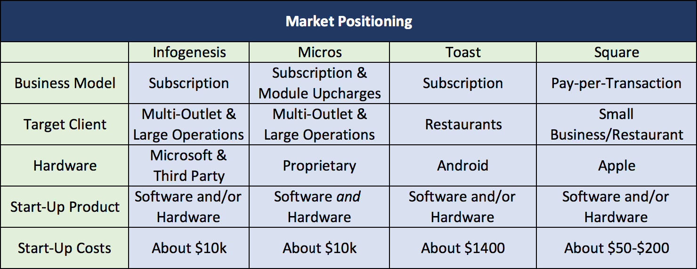
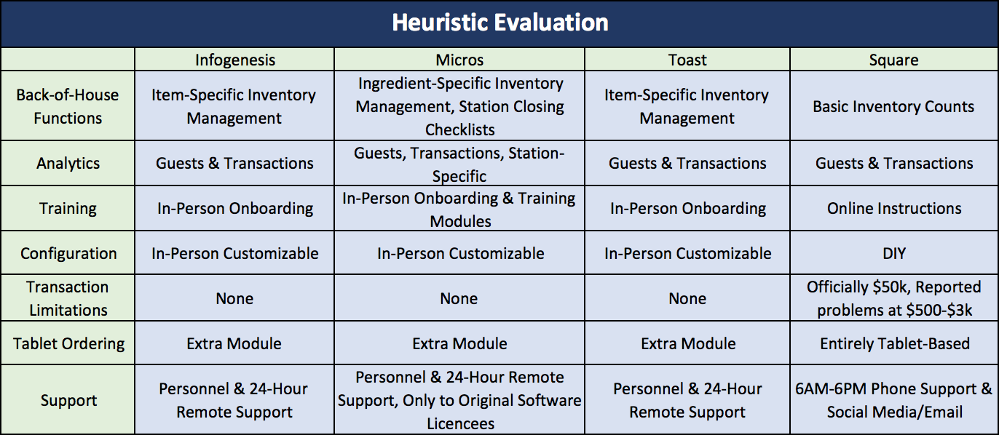
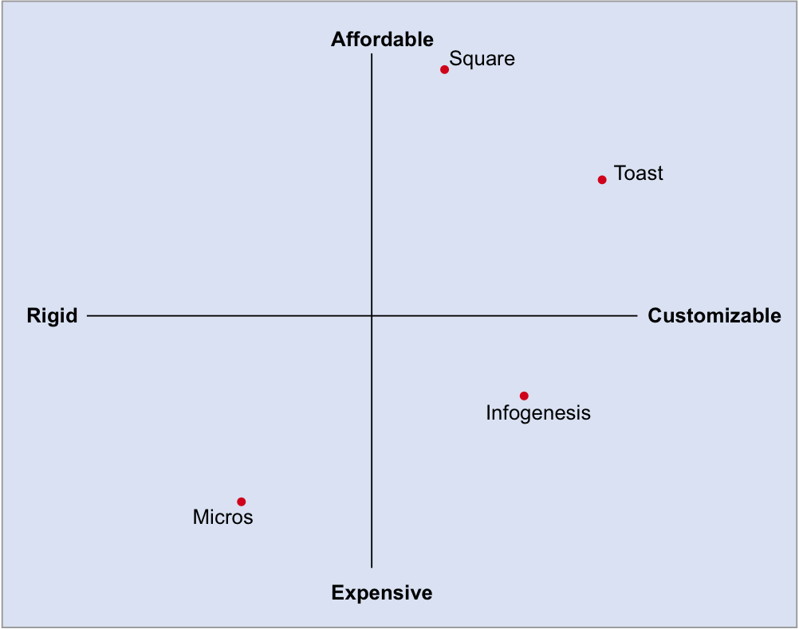
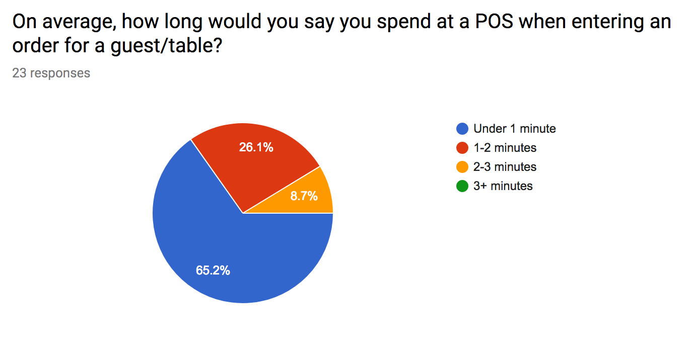
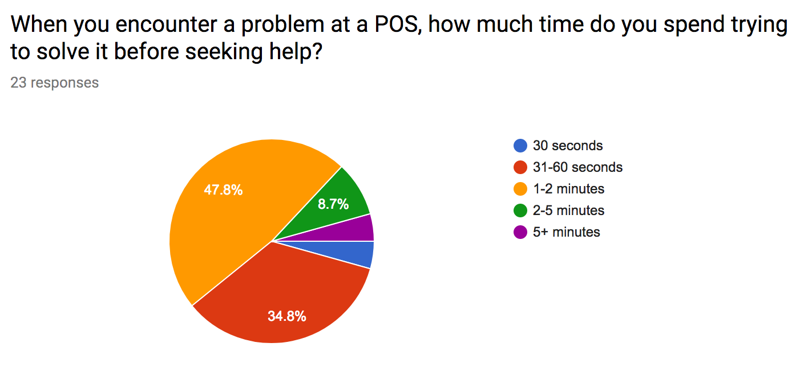
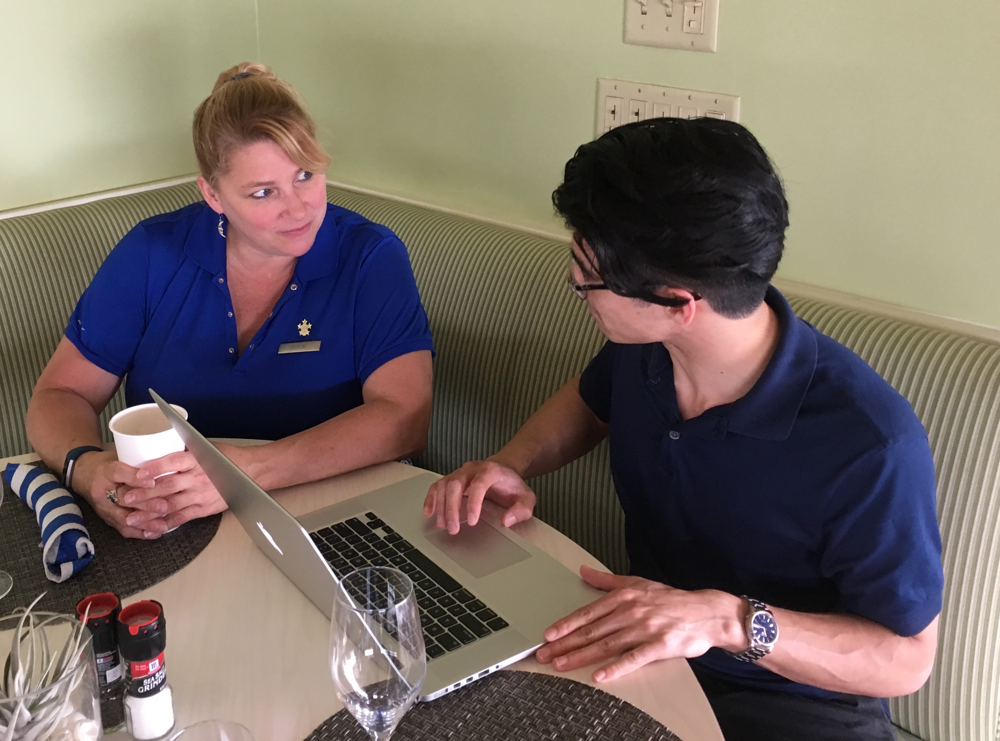
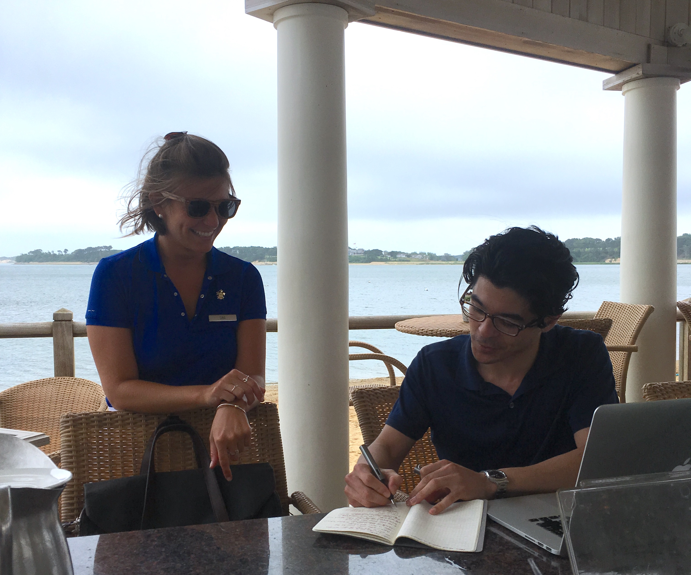
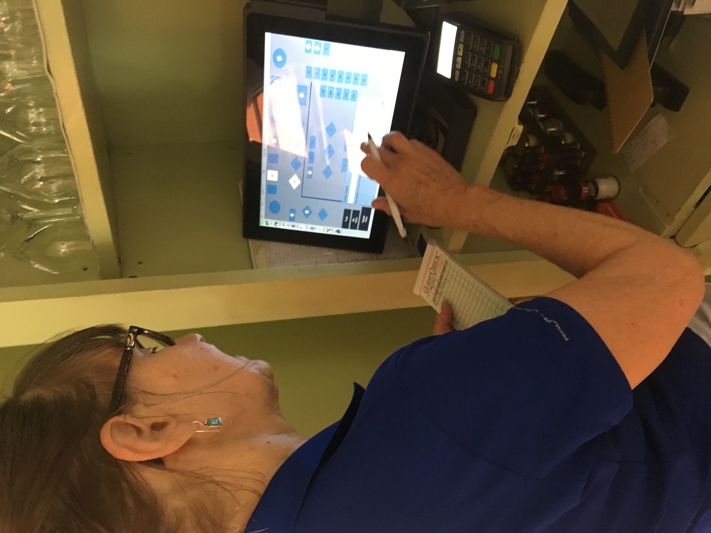

Context
Before I knew it had a name, I was designing the user experience for the staff in my restaurant — configuring the information architecture of the POS system and sourcing the staff for guidance on how to structure menu items. When given the opportunity to focus on one area of UX design in depth, it was a natural choice to apply formal research methodology to the problem I'd been navigating intuitively.
Point-of-sale systems are a critical piece of restaurant operations. They're touched by every server, every shift — and when they fail or frustrate, the cost isn't abstract. It shows up in wait times, in errors, in unhappy guests, and ultimately in the repeat business a restaurant depends on.
Objective & Goal
Objective: A wide variety of point-of-sale systems are in use in restaurants, each with their own advantages and drawbacks. While most allow customization, their functions are not always clear for service staff. Without a clear picture of the problems staff encounter, performance suffers — and with it, the guest experience.
Goal: Apply UX research methodology to gain an understanding of the POS marketplace, identify user frustrations, and suggest actionable solutions.
Competitive Analysis
I began with a competitive analysis of four POS systems — two well-established legacy platforms and two more recently-released options.

Market positioning across the four systems — business model, target client, hardware, startup costs.

Feature comparison — back-of-house functions, analytics, training, configuration, and support across all four systems.
At first glance, most POS systems offer comparable features. On deeper analysis, the quality gap between legacy and modern systems becomes apparent. The most useful frame is plotting systems by rigidity vs. expense:

Competitive positioning quadrant — Toast and Infogenesis emerge as the strongest options due to customizability. Cost and operational requirements dictate the choice between them.
User Research — Survey
I distributed a survey to a network of former co-workers via Google Forms, targeting current and former restaurant service staff.


Two findings stood out immediately. Most serving staff will double their time at a POS station when they hit an error before seeking help. And 60 seconds to a server is often perceived by a waiting guest as five minutes.
When delays compound — when one roadblock triggers another — a single extra minute becomes five. Beyond affecting employee experience, these delays cost restaurants the repeat clientele on which they depend to turn a profit.
Interviews & Contextual Inquiry
I conducted user interviews and contextual inquiries on-site at Wequassett Resort and Golf Club — a 5-Star resort on Cape Cod. Observing staff in their actual working environment, under real service pressure, surfaced a qualitatively different kind of insight than survey data alone.



Contextual inquiry in action — observing a server navigate the POS tablet during an actual service session.
"Most servers aren't as tech-savvy as the people who put these systems together — make it dummy-proof."
— Caroline, Restaurant Server
Key themes across all research:
- Speed above everything. Serving staff need a system to be fast, first. Every other consideration is secondary.
- Onboarding matters. Thorough training is essential when adopting a new system — staff can't learn on the fly during service.
- Color-coding accelerates ordering. Visual differentiation reduced cognitive load and sped up common tasks.
- Fewer clicks, always. Every additional tap is friction. Optimal flows minimize the path to order completion.
- The bar is "dummy-proof." Staff want systems that handle errors gracefully, not ones that punish unfamiliarity.
- Connectivity is a risk with tablets. Wireless reliability is a real operational concern when service depends on it.
Conclusions
POS developers and designers should conduct user research and testing to establish effective configuration frameworks for restaurant owners — rather than leaving operators to discover usability problems themselves after deployment.
Based on the research, two improvements stand out as immediate priorities:
- Color-coding — visual organization that lets staff act without reading
- Click-reduction — streamlining the most common flows to the minimum number of steps
Beyond the product itself: once a system is in the hands of restaurant operators, user testing should be conducted with their own staff to validate the specific configuration they've chosen. And resources should be allocated to thorough management and staff training before go-live — no system, however well-designed, performs well without it.
The gap between how these systems are built and how staff actually use them under pressure is real. Closing it is a design problem as much as a training one.